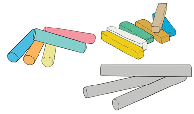
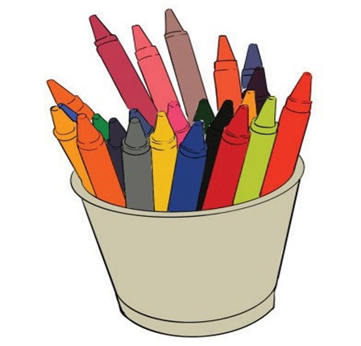

Crayons: These are art media for drawing which are made of many bright colours. They are composed of wax and frequently longer and thicker. Crayons work better for huge areas of a drawing. As a result of their wax composition, crayons are water-resistant to any water-based media including marker pens and ink. Crayons are non-toxic and easy to use. Figure 2.12 shows crayons of different colours.

Brushes and colours: These are materials normally used simultaneously in drawing and painting. Brushes can be used for either water colour drawing or oil colour drawing depending on the needs of the artist. Figure 2.13 shows brushes and colours that can be used in drawing.